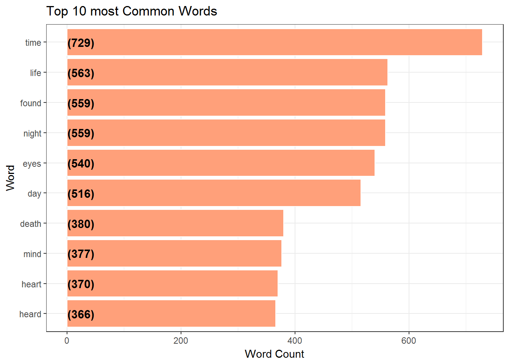
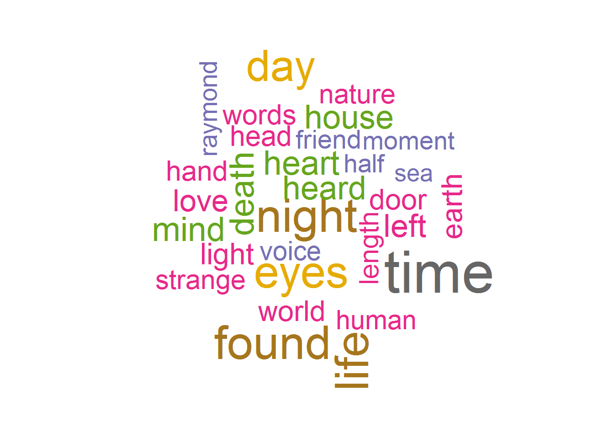
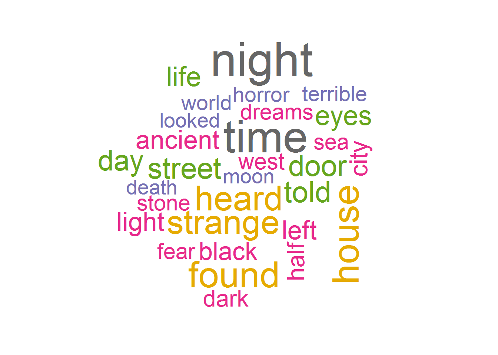
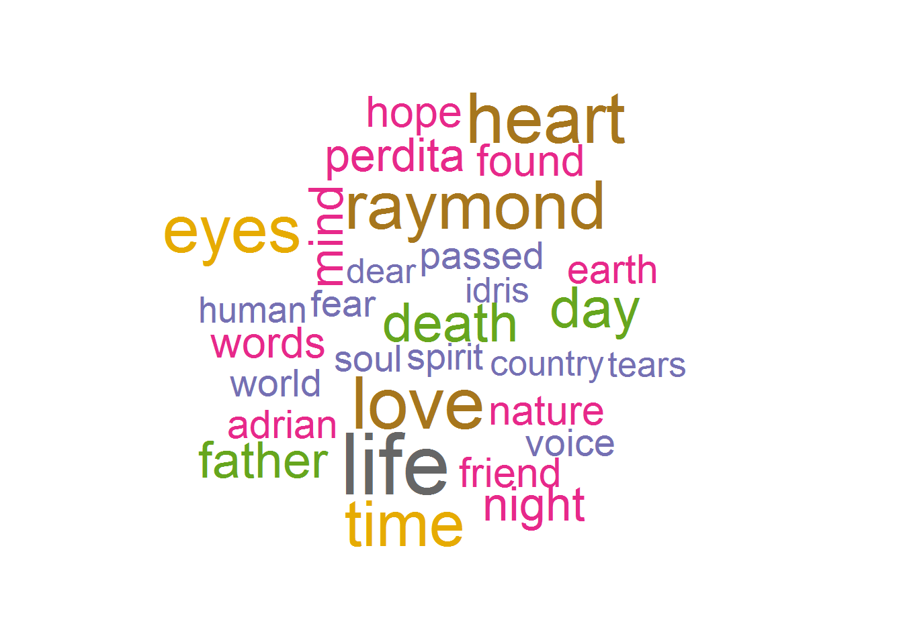
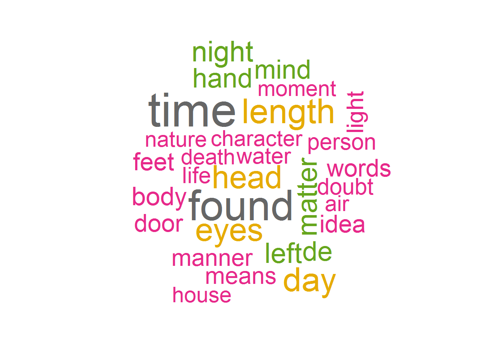

Chapter 7 Top Twenty most Common Words
We examine the Top Twenty Most Common words and show them in a bar graph. Several words which occur a lot are time , life , found , night, eyes, day , death, mind , heard
train %>%
unnest_tokens(word, text) %>%
filter(!word %in% stop_words$word) %>%
count(word,sort = TRUE) %>%
ungroup() %>%
mutate(word = factor(word, levels = rev(unique(word)))) %>%
head(10) %>%
ggplot(aes(x = word,y = n)) +
geom_bar(stat='identity',colour="white", fill =fillColor) +
geom_text(aes(x = word, y = 1, label = paste0("(",n,")",sep="")),
hjust=0, vjust=.5, size = 4, colour = 'black',
fontface = 'bold') +
labs(x = 'Word', y = 'Word Count',
title = 'Top 10 most Common Words') +
coord_flip() +
theme_bw()
7.1 WordCloud of the Common Words
A word cloud is a graphical representation of frequently used words in the text. The height of each word in this picture is an indication of frequency of occurrence of the word in the entire text.
createWordCloud = function(train)
{
train %>%
unnest_tokens(word, text) %>%
filter(!word %in% stop_words$word) %>%
count(word,sort = TRUE) %>%
ungroup() %>%
head(30) %>%
with(wordcloud(word, n, max.words = 30,colors=brewer.pal(8, "Dark2")))
}
createWordCloud(train)
7.2 WordCloud of HPL
Time , night, strange, found, house are the most common words written by HP Lovecraft.
createWordCloud(train %>% filter(author == 'HPL'))
7.3 WordCloud of MWS
Raymond,heart, love, time and eyes are the most common words written by Mary Wollstonecraft Shelley
createWordCloud(train %>% filter(author == 'MWS'))
7.4 WordCloud of EAP
Found, time, eyes, length, head, day are the most common words written by Edgar Allan Poe.
createWordCloud(train %>% filter(author == 'EAP'))